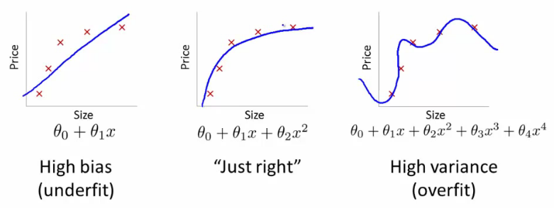
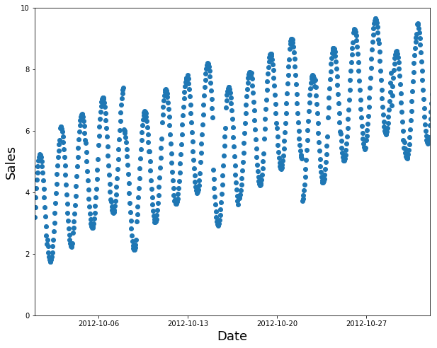
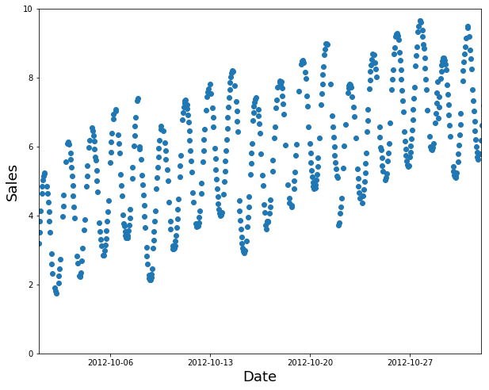
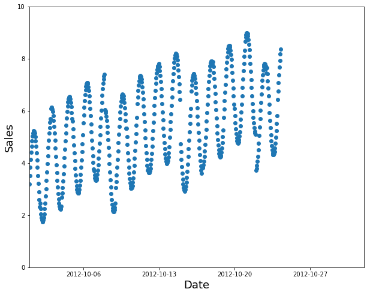
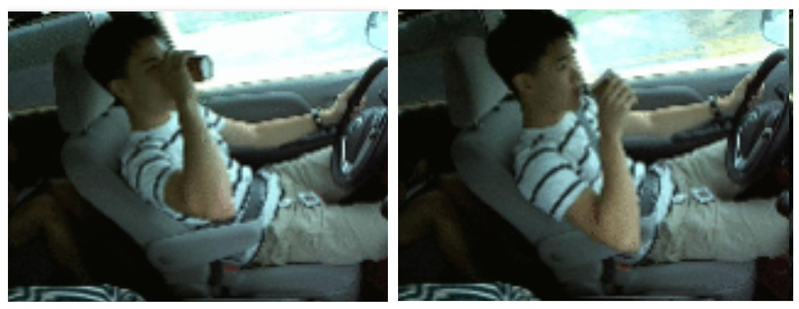

An all-too-common scenario: a seemingly impressive machine learning model is a complete failure when implemented in production. The fallout includes leaders who are now skeptical of machine learning and reluctant to try it again. How can this happen?
One of the most likely culprits for this disconnect between results in development vs results in production is a poorly chosen validation set (or even worse, no validation set at all). Depending on the nature of your data, choosing a validation set can be the most important step. Although sklearn offers a train_test_split method, this method takes a random subset of the data, which is a poor choice for many real-world problems.
The definitions of training, validation, and test sets can be fairly nuanced, and the terms are sometimes inconsistently used. In the deep learning community, “test-time inference” is often used to refer to evaluating on data in production, which is not the technical definition of a test set. As mentioned above, sklearn has a train_test_split method, but no train_validation_test_split. Kaggle only provides training and test sets, yet to do well, you will need to split their training set into your own validation and training sets. Also, it turns out that Kaggle’s test set is actually sub-divided into two sets. It’s no suprise that many beginners may be confused! I will address these subtleties below.
First, what is a “validation set”?
When creating a machine learning model, the ultimate goal is for it to be accurate on new data, not just the data you are using to build it. Consider the below example of 3 different models for a set of data:

The error for the pictured data points is lowest for the model on the far right (the blue curve passes through the red points almost perfectly), yet it’s not the best choice. Why is that? If you were to gather some new data points, they most likely would not be on that curve in the graph on the right, but would be closer to the curve in the middle graph.
The underlying idea is that:
- the training set is used to train a given model
- the validation set is used to choose between models (for instance, does a random forest or a neural net work better for your problem? do you want a random forest with 40 trees or 50 trees?)
- the test set tells you how you’ve done. If you’ve tried out a lot of different models, you may get one that does well on your validation set just by chance, and having a test set helps make sure that is not the case.
A key property of the validation and test sets is that they must be representative of the new data you will see in the future. This may sound like an impossible order! By definition, you haven’t seen this data yet. But there are still a few things you know about it.
When is a random subset not good enough?
It’s instructive to look at a few examples. Although many of these examples come from Kaggle competitions, they are representative of problems you would see in the workplace.
Time series
If your data is a time series, choosing a random subset of the data will be both too easy (you can look at the data both before and after the dates your are trying to predict) and not representative of most business use cases (where you are using historical data to build a model for use in the future). If your data includes the date and you are building a model to use in the future, you will want to choose a continuous section with the latest dates as your validation set (for instance, the last two weeks or last month of the available data).
Suppose you want to split the time series data below into training and validation sets:

A random subset is a poor choice (too easy to fill in the gaps, and not indicative of what you’ll need in production):

Use the earlier data as your training set (and the later data for the validation set):

Kaggle currently has a competition to predict the sales in a chain of Ecuadorian grocery stores. Kaggle’s “training data” runs from Jan 1 2013 to Aug 15 2017 and the test data spans Aug 16 2017 to Aug 31 2017. A good approach would be to use Aug 1 to Aug 15 2017 as your validation set, and all the earlier data as your training set.
New people, new boats, new…
You also need to think about what ways the data you will be making predictions for in production may be qualitatively different from the data you have to train your model with.
In the Kaggle distracted driver competition, the independent data are pictures of drivers at the wheel of a car, and the dependent variable is a category such as texting, eating, or safely looking ahead. If you were the insurance company building a model from this data, note that you would be most interested in how the model performs on drivers you haven’t seen before (since you would likely have training data only for a small group of people). This is true of the Kaggle competition as well: the test data consists of people that weren’t used in the training set.

If you put one of the above images in your training set and one in the validation set, your model will seem to be performing better than it would on new people. Another perspective is that if you used all the people in training your model, your model may be overfitting to particularities of those specific people, and not just learning the states (texting, eating, etc).
A similar dynamic was at work in the Kaggle fisheries competition to identify the species of fish caught by fishing boats in order to reduce illegal fishing of endangered populations. The test set consisted of boats that didn’t appear in the training data. This means that you’d want your validation set to include boats that are not in the training set.
Sometimes it may not be clear how your test data will differ. For instance, for a problem using satellite imagery, you’d need to gather more information on whether the training set just contained certain geographic locations, or if it came from geographically scattered data.
The dangers of cross-validation
The reason that sklearn doesn’t have a train_validation_test split is that it is assumed you will often be using cross-validation, in which different subsets of the training set serve as the validation set. For example, for a 3-fold cross validation, the data is divided into 3 sets: A, B, and C. A model is first trained on A and B combined as the training set, and evaluated on the validation set C. Next, a model is trained on A and C combined as the training set, and evaluated on validation set B. And so on, with the model performance from the 3 folds being averaged in the end.
However, the problem with cross-validation is that it is rarely applicable to real world problems, for all the reasons describedin the above sections. Cross-validation only works in the same cases where you can randomly shuffle your data to choose a validation set.
Kaggle’s “training set” = your training + validation sets
One great thing about Kaggle competitions is that they force you to think about validation sets more rigorously (in order to do well). For those who are new to Kaggle, it is a platform that hosts machine learning competitions. Kaggle typically breaks the data into two sets you can download:
a training set, which includes the independent variables, as well as the dependent variable (what you are trying to predict). For the example of an Ecuadorian grocery store trying to predict sales, the independent variables include the store id, item id, and date; the dependent variable is the number sold. For the example of trying to determine whether a driver is engaging in dangerous behaviors behind the wheel, the independent variable could be a picture of the driver, and the dependent variable is a category (such as texting, eating, or safely looking forward).
a test set, which just has the independent variables. You will make predictions for the test set, which you can submit to Kaggle and get back a score of how well you did.
This is the basic idea needed to get started with machine learning, but to do well, there is a bit more complexity to understand. You will want to create your own training and validation sets (by splitting the Kaggle “training” data). You will just use your smaller training set (a subset of Kaggle’s training data) for building your model, and you can evaluate it on your validation set (also a subset of Kaggle’s training data) before you submit to Kaggle.
The most important reason for this is that Kaggle has split the test data into two sets: for the public and private leaderboards. The score you see on the public leaderboard is just for a subset of your predictions (and you don’t know which subset!). How your predictions fare on the private leaderboard won’t be revealed until the end of the competition. The reason this is important is that you could end up overfitting to the public leaderboard and you wouldn’t realize it until the very end when you did poorly on the private leaderboard. Using a good validation set can prevent this. You can check if your validation set is any good by seeing if your model has similar scores on it to compared with on the Kaggle test set.
Another reason it’s important to create your own validation set is that Kaggle limits you to two submissions per day, and you will likely want to experiment more than that. Thirdly, it can be instructive to see exactly what you’re getting wrong on the validation set, and Kaggle doesn’t tell you the right answers for the test set or even which data points you’re getting wrong, just your overall score.
Understanding these distinctions is not just useful for Kaggle. In any predictive machine learning project, you want your model to be able to perform well on new data.